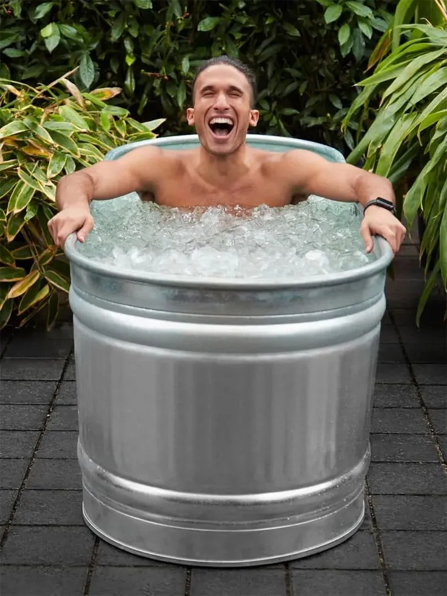

Why Is Everyone Doing Cold Plunges Now? Benefits & Risks Explained
If you've scrolled through TikTok or Instagram lately, chances are you've seen influencers and athletes diving into freezing tubs of water, swearing by the benefits. This viral wellness trend—known as a cold plunge—isn’t just about shock value. From boosting recovery to improving mood and metabolism, cold plunge therapy is quickly becoming a go-to for anyone serious about physical and mental health. But is it worth the hype? In this article, we’ll break down exactly what a cold plunge is, explore the science-backed benefits, and show you how to start cold plunges at home—even if you're on a budget.
What Is a Cold Plunge?
A cold plunge is the practice of immersing your body in cold water, typically between 50°F and 59°F, for a limited time. This method, rooted in ancient traditions and modern recovery science, is gaining traction among athletes, biohackers, and wellness enthusiasts. While it may seem extreme, the surge in popularity of cold plunge therapy is backed by studies that show its benefits on both mental and physical health.
The Rise of Cold Plunge Therapy in 2025
From TikTok influencers to NFL athletes, cold water therapy has taken over the wellness scene in 2025. As more people share their transformation stories, interest in cold plunge benefits has skyrocketed. The appeal? It's natural, cost-effective, and remarkably accessible—especially for those who want to create a cold plunge at home.
Science-Backed Benefits of Cold Plunging
Clinical studies and anecdotal evidence agree: cold plunge therapy offers real health improvements. Key benefits include reduced inflammation, improved muscle recovery, heightened mental clarity, better sleep, and a boost in dopamine levels. Cold exposure activates the sympathetic nervous system, leading to improved circulation and metabolic function.
How Cold Exposure Affects the Body
When the body is submerged in cold water, vasoconstriction occurs—blood vessels tighten, redirecting blood flow to vital organs. This shock triggers hormone release, including norepinephrine, which enhances focus and mood. That’s why cold water therapy is often associated with stress relief and mental resilience.
Cold Plunge vs Ice Bath: What's the Difference?
Though often used interchangeably, cold plunges and ice baths differ. A cold plunge tub typically maintains a consistent, filtered temperature, making it safer and cleaner than a traditional ice bath. Athletes often prefer cold plunge setups for their hygiene and temperature control.
Cold Plunge and Immune System
Emerging research suggests that regular cold plunge therapy can positively impact immune function. Exposure to cold water stimulates white blood cell production and can enhance resistance to illness. Athletes and wellness advocates often cite fewer colds and improved general health after adopting cold water therapy as part of their routine.
Impact on Sleep Quality
One surprising benefit of cold plunges is improved sleep. The drop in core body temperature post-immersion activates parasympathetic processes that promote rest and relaxation. Users report falling asleep faster and experiencing deeper, more restorative sleep after evening sessions of cold plunge therapy.
Cold Plunges and Athletic Recovery
Recovery is one of the main reasons athletes turn to cold water therapy. It reduces inflammation, flushes metabolic waste, and limits delayed-onset muscle soreness (DOMS). Incorporating cold plunges post-workout can shorten recovery windows, helping high performers train more consistently.
The Role of Brown Fat Activation
One of the physiological mechanisms behind cold plunge benefits is the activation of brown adipose tissue, or brown fat. This fat type burns calories to generate heat, improving metabolic health. Repeated cold water exposure trains your body to become more thermogenically active, supporting weight management efforts.
Is Cold Plunge Therapy Right for You?
While many people benefit from cold plunge therapy, it’s not ideal for everyone. Those with high blood pressure, heart disease, or certain respiratory conditions should consult a medical professional. Even healthy individuals should begin slowly, especially when experimenting with cold plunges at home.
Tips for Your First Cold Plunge
Starting out? Keep your cold plunge under 3 minutes, focus on slow breathing, and prepare warm clothes or a blanket for aftercare. Stay calm—your body will adjust. Don’t go alone the first time, and track your response to measure your progress. These precautions will help build a safe and sustainable cold water therapy habit.
Why Cold Plunges Are Trending in Biohacking
In the biohacking community, cold plunge therapy is seen as one of the most accessible ways to enhance performance and longevity. It boosts alertness, promotes cellular repair, and supports hormonal balance. As more data emerges, cold water immersion continues to gain traction among those optimizing physical and cognitive function.
Cost-Effective Ways to Create a Cold Plunge at Home
You don’t need a luxury spa setup. Many people use chest freezers, converted barrels, or even inflatable tubs with added ice. There are now affordable portable cold plunge kits available online. Whether DIY or store-bought, cold plunges at home can be tailored to your budget.
How Often Should You Cold Plunge?
For most people, 3–4 sessions per week provide noticeable benefits. Daily cold plunge therapy is safe for healthy individuals if durations are kept within recommended limits. Rest days are essential to allow your nervous system time to adapt and recover from the hormetic stress of cold water exposure.
Pairing Cold Plunges with Other Recovery Tools
To amplify recovery, many people combine cold plunge therapy with other modalities like sauna use, red light therapy, and compression gear. Alternating between heat and cold exposure (contrast therapy) improves circulation and detoxification. A holistic approach enhances the overall impact of your cold plunge routine.
Final Thoughts: Should You Take the Plunge?
Whether you're chasing faster recovery, improved mental clarity, or simply exploring new wellness strategies, the cold plunge benefits are hard to ignore. With minimal equipment and a bit of grit, you can easily incorporate cold plunge therapy into your weekly routine—right from the comfort of your home.
From reducing inflammation to boosting your mood, the science behind cold water exposure continues to grow stronger. But like any health practice, consistency is key—and safety comes first.
Ready to give it a try? Start small, track your progress, and see how your body and mind respond. If you found this guide helpful, consider sharing it with a friend or checking out our other recovery-focused articles below.
Explore Next: Top Fitness Trackers to Pair With Cold Therapy
Common Mistakes to Avoid
- Staying too long: Exceeding 10 minutes, especially for beginners, can increase risk of hypothermia and shock.
- Skipping warm-up or cooldown: Jumping into a cold plunge without warming up or neglecting proper aftercare can harm recovery.
- Improper setup: Using dirty water, poor temperature control, or unstable containers can lead to infections or injuries.
- Ignoring health conditions: Individuals with heart issues or high blood pressure must consult a doctor first.
- Holding breath: Cold shock may trigger instinctive breath-holding, which can be dangerous. Focus on controlled breathing.
- Expecting instant results: Like all wellness practices, consistency is key—don’t expect dramatic results after one session.
Recommended Products
Choosing the right equipment can make a huge difference in your cold plunge experience. Below are some top-rated products available on Amazon that are ideal for improving your cold plunge therapy with chillers and temperature control.
1. Mozoo Inflatable Bathtub for Adults
This highly-rated inflatable tub is a favorite for beginners setting up a cold plunge at home. It’s spacious, portable, and affordable—perfect when paired with ice or an external chiller.
2. Cold Plunge Chiller - Including All Hoses and Pumps
This compact cold plunge chiller is powerful enough to maintain water temperatures below 50°F. A great addition for creating a cold plunge with chiller in any setting.
3. Intex 120V Krystal Clear Pool Filter Pump
While designed for pools, many DIY users adapt this filter pump to maintain water circulation and cleanliness in a cold plunge tub with chiller. Helps maintain ideal cold plunge temperature.
4. Inkbird WiFi ITC-308 Temperature Controller
Control and monitor your cold plunge temperature and time with this smart digital device. Works with chillers and freezers, making it easy to build a consistent cold plunge routine.
Frequently Asked Questions
How long should a cold plunge be?
Beginners should start with 2–3 minutes and gradually work up to 5–10 minutes. Listen to your body and avoid overexposure, especially when new to cold plunge therapy.
What is the ideal cold plunge temperature?
The ideal cold plunge temperature is between 50°F and 59°F. This range is cold enough to trigger physiological responses without risking safety for most users.
Can I do a cold plunge every day?
Yes, but it depends on individual health and recovery needs. Most people benefit from 3–4 sessions per week. Daily cold plunges are generally safe if durations are controlled.
Is a cold plunge better before or after a workout?
Cold plunges are best used after workouts to reduce inflammation and enhance recovery. Pre-workout use is not harmful but may slightly reduce muscle performance.
Can I use a chest freezer as a cold plunge tub?
Yes, many people convert chest freezers into cold plunge tubs with chillers. Use a temperature controller and ensure proper safety measures to avoid electrical hazards.
What are the mental benefits of cold plunging?
Cold plunge therapy can improve mood, reduce stress, and increase mental resilience. It stimulates dopamine and norepinephrine, leading to heightened alertness and emotional regulation.